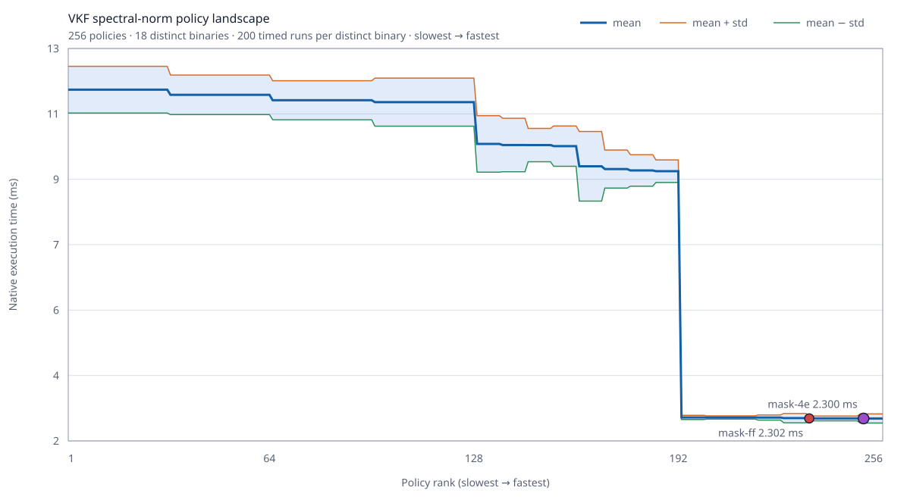

VKF 0.1.7 Optimizer Policy Landscape

This experiment compiles the exact spectral-norm medium VKF program under every combination of eight legal optimizer switches. It checks every candidate against the scalar policy, deduplicates byte-identical machine code, and times each distinct binary 200 times in interleaved rounds.
| Result | Value |
|---|---|
| Correct policies | 256 / 256 |
| Distinct machine-code binaries | 18 |
| Actual executions | 3636 |
| Search time | 60158.5 ms |
| Slowest policy mean | 12.028 ms |
| Fastest measured policy | mask-4e |
| Fastest measured mean | 2.300 ± 0.135 ms |
Default mask-ff mean | 2.302 ± 0.072 ms |
| Fastest/slowest spread | 5.23× |
| Selected/default difference | 0.1% |
The complete machine-readable evidence, including all 256 policy records, hashes, output, compiler identity, and host conditions, is windows-x64-v0.1.7-ci.json.
What The Policy Bits Mean
| Bit | Policy |
|---|---|
| 0 | Borrow aggregate parameters instead of copying them. |
| 1 | Forward aggregate results directly into their destination. |
| 2 | Use packed matrix-reduction kernels when the exact safe loop shape is proven. |
| 3 | Keep proven integer locals as native integers. |
| 4 | Address proven vector indices with native integer registers. |
| 5 | Specialize parity checks. |
| 6 | Fuse multiply-add where target support and numeric rules permit it. |
| 7 | Use packed dual-dot reductions when the exact safe loop shape is proven. |
The Idea
A single global optimization recipe is rarely best for every program. VKF represents lowering choices as data, emits several legal machine-code variants, verifies their result, and can retain the best policy for the exact program and host. A compilation time limit bounds the search in normal use; exhaustive search is an explicit benchmark mode.
Code-identical policies are timed once. Here, 256 logical policies collapse to 18 binaries, so the experiment performs 3636 executions rather than naively timing every alias independently.
Honest Interpretation
The robust result is the large policy landscape: the best basin is about 5.23× faster than the slowest legal policy. The exact 0.1% lead of mask-4e over mask-ff is smaller than run-to-run variance and was not stable in a separate order-reversed check. It is a measured winner, not proof that it is universally faster. Release defaults therefore remain conservative, while profiles and future selectors can learn from the larger, repeatable policy effects.
Reproduce
node benchmarks/policy-landscape/run.mjs --compiler=build/native-compiler-clang/bin/vkf-strict.exe --runs=200 --output=benchmarks/policy-landscape/evidence/windows-x64-v0.1.7The command is a benchmark tool only. Compiling or running VKF programs does not require Node, Python, a C++ compiler, assembler, or external linker.